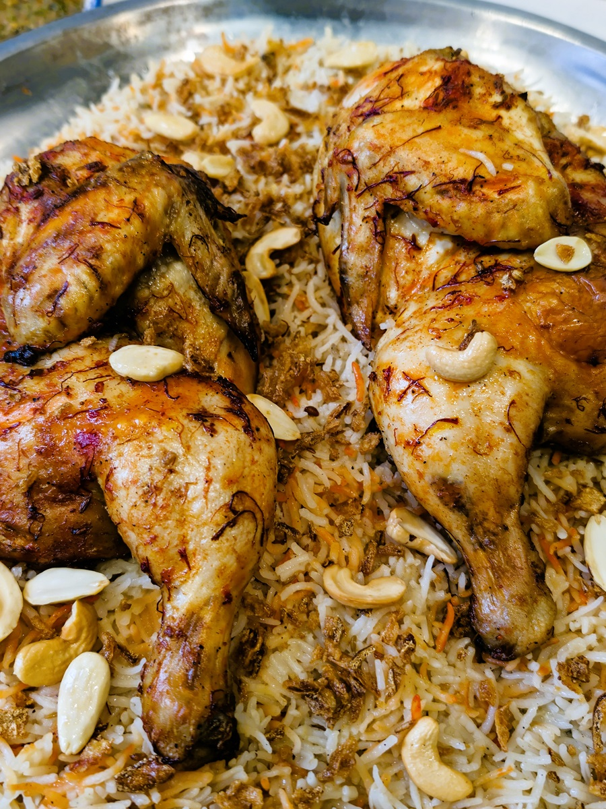

Yemeni Mandhi

Here’s a recipe for Yemeni Mandi (مندي), a fragrant rice and meat dish traditionally cooked in a tandoor or underground pit,
but you can make it beautifully at home with your oven or stovetop.
Meat Marinade
- Chicken or lamb (bone-in)
- Oil or ghee
- Turmeric
- Cumin
- Coriander
- Paprika or chili powder
- Cinnamon
- Cardamom
- Black pepper
- Salt
- Lemon juice
Rice
- Basmati rice
- Onion
- Garlic
- Oil or ghee
- Cinnamon stick
- Cardamom pods
- Cloves
- Bay leaves
- Turmeric
- Stock (chicken or lamb)
- Salt
Garnish (optional but traditional)
- Saffron + warm milk
- Raisins
- Slivered almonds
Steps
- Marinate meat with oil, lemon juice, salt, turmeric,
cumin, coriander, paprika, cinnamon, cardamom, black pepper.
- Cook meat in oven (chicken ~40 min,
lamb longer until tender) or grill.
- Sauté onion + garlic in oil/ghee,
add cinnamon stick, cardamom, cloves, bay leaves.
- Add rice with turmeric + salt, stir.
- Pour stock, cover, cook until rice is fluffy.
- Place meat on rice, drizzle saffron milk (optional).
- Garnish with raisins + almonds.
Serve hot.